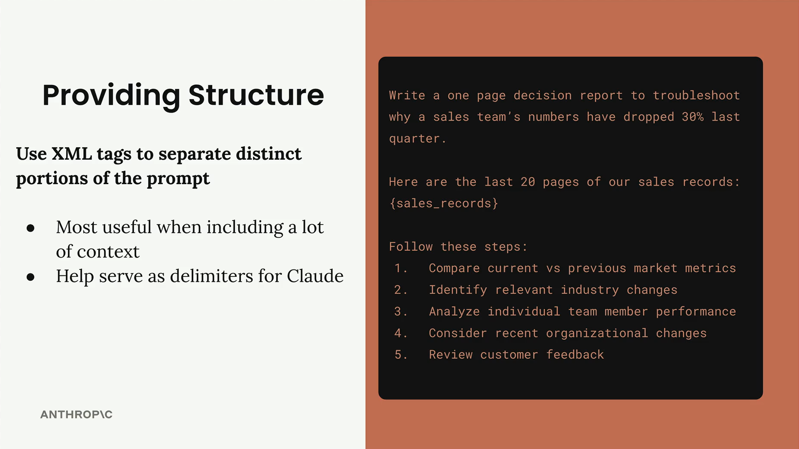
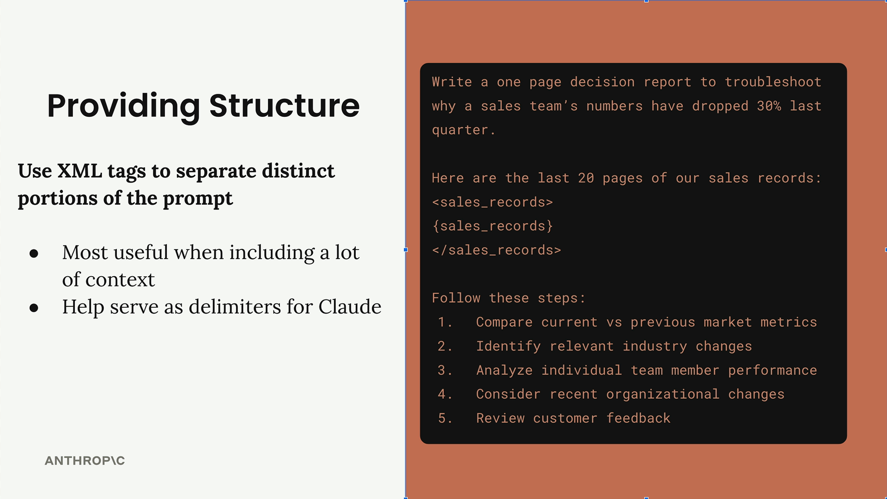
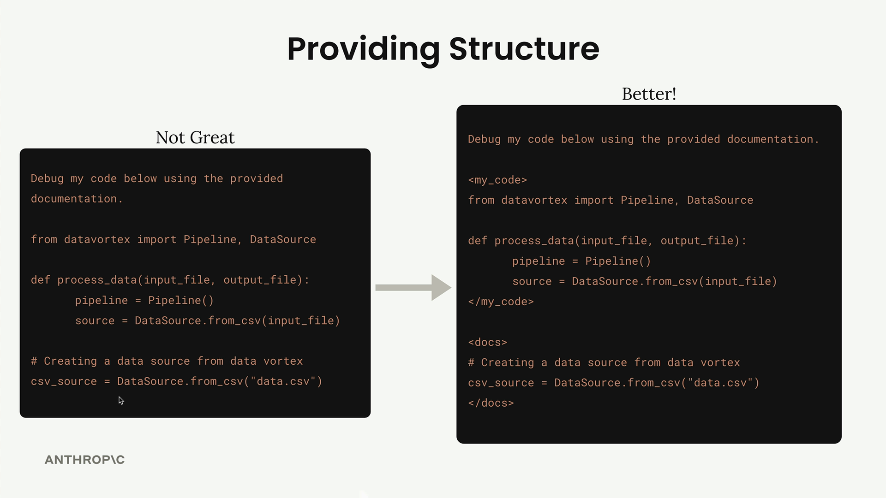

Структура через XML-теги
Чему научитесь
Видео 4:00 и текст урока
К концу урока вы сможете:
- объяснить, зачем отделять данные от инструкций в промпте;
- подбирать понятные имена тегов;
- решать, когда XML-теги действительно нужны.
Видео и текст урока.
Смотреть урок на Skilljar Structure with XML tags · 4:00Когда в промпт попадает много содержимого, Claude иногда трудно понять, какие куски текста связаны между собой и что означает каждый раздел. XML-теги — простой способ добавить промпту структуру и ясность, особенно когда в него подставляются большие объёмы данных.
Почему важна структура
Представьте промпт, в котором нужно проанализировать 20 страниц записей о продажах. Без чётких границ Claude может с трудом отличать ваши инструкции от данных, которые нужно проанализировать.

Пример выше показывает, как размытые границы мешают Claude понять ваш замысел. Если обернуть записи о продажах в XML-теги вроде <sales_records> и </sales_records>, появятся чёткие разделители, которые помогают Claude понять структуру промпта.

<sales_records>.Практический пример: код и документация
Вот ещё более наглядный пример. Если вы просите Claude отладить код с помощью приложенной документации, а всё смешано в одну кучу, возникает путаница:

<my_code> и <docs>.В варианте «Not Great» почти невозможно понять, где код, а где документация. Вариант «Better» использует теги <my_code> и <docs>, чтобы чётко разграничить содержимое.
Свои имена тегов
Специальные «официальные» XML-теги не нужны. Придумывайте описательные имена, которые подходят вашему содержимому:
<sales_records>лучше, чем<data>;<athlete_information>ясно обозначает данные пользователя;<my_code>и<docs>разделяют разные виды содержимого.
Чем конкретнее и понятнее имена тегов, тем лучше Claude понимает назначение каждого раздела.
Когда использовать XML-теги
XML-теги полезнее всего, когда:
- в промпт включается много контекста или данных;
- смешиваются разные виды содержимого (код, документация, данные);
- вы хотите особенно чётко обозначить границы содержимого;
- промпт сложный и в него подставляется несколько переменных.
Даже для коротких фрагментов XML-теги могут служить разделителями, которые делают структуру промпта нагляднее для Claude.
Применение на практике
На практике промпт можно построить так:
<athlete_information> - Height: 6'2" - Weight: 180 lbs - Goal: Build muscle - Dietary restrictions: Vegetarian </athlete_information> Generate a meal plan based on the athlete information above.
Так совершенно ясно, что рост, вес, цель и ограничения — это связанные данные о спортсмене, которые нужно учитывать вместе при составлении плана питания.
На простых промптах заметного эффекта может и не быть, но чем сложнее промпт и чем больше в нём разнородного содержимого, тем ценнее становятся XML-теги.
Дальше
Последний приём блока — примеры: one-shot и multi-shot prompting.
Оригинал урока: Structure with XML tags.